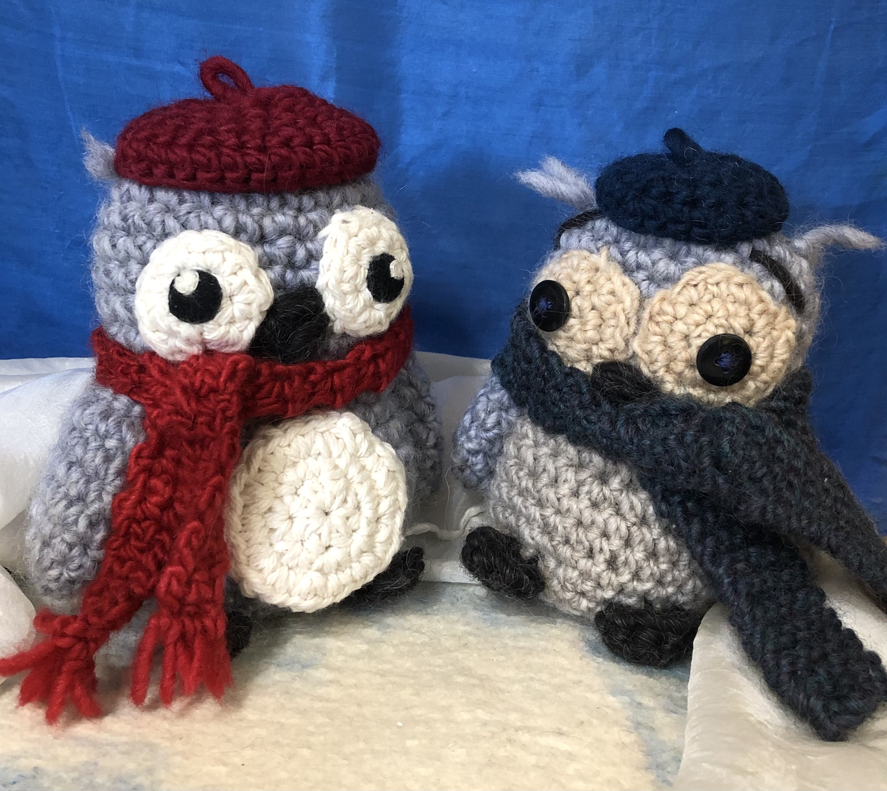

Knit and Crochet

Sewing

Working with textiles lets you explore many different types of art creation. You can work with yarn and knit and crochet to make apparel, but you can also create cute stuffed animals, bookmarks, bags - the possibilities are endless!
I also enjoy working with fabrics, which is also a great outlet for creativity. I have made clothing as well as small drawstring bags and pencil cases.
Needle felting is a form of art that is almost like sculpture, but with wool. You use a special type of needle to shape raw wool into anything you would like. I often like to create different kinds of animals.